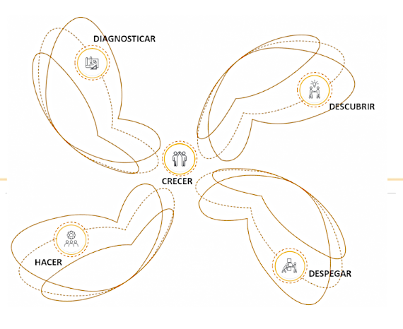

ES HORA DE HACER REALIDAD TUS SUEÑOS
Leer másLo ultimo de Nosotros
MACONDOLAB
Un centro de desarrollo tecnológico que está soportado por dos pilares fundamentales: la innovación y la convergencia tecnológica. Procesos que, de manera articulada con diferentes actores del entorno socioeconómico, contribuyen al desarrollo social, político, cultural y económico, no solo a nivel local sino nacional y con perspectiva internacional. Da cuenta de ello el establecimiento de un marco político institucional para su fomento y desarrollo, así como la puesta en marcha de estructuras y estrategias para su operacionalización y sostenibilidad.
SERVICIOS
Pretendemos propiciar y apoyar los procesos innovación en la triada Universidad-Empresa-Estado a través de la articulación con el sector productivo y gubernamental a través del uso de diferentes estrategias en procesos de innovación abierta aprovechando capacidades co-creadoras e innovadoras de empresas y entidades de desarrollo tecnológico y fomentando la apropiación y transferencia de conocimiento al interior de las organizaciones.